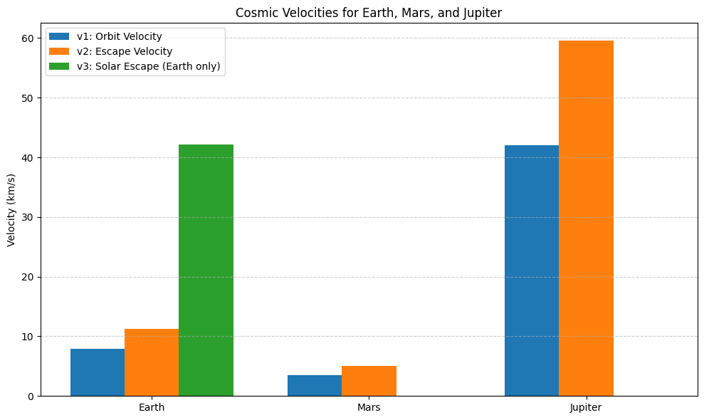

Problem 2
gravity 2.1.1
Problem 2 – Task 1: Define the First, Second, and Third Cosmic Velocities 📌 Definitions and Physical Meaning First Cosmic Velocity ( 𝑣 1 v 1 ) — Orbital Velocity The minimum horizontal speed needed for an object to enter stable circular orbit near the surface of a planet (without propulsion).
𝑣 1 = 𝐺 𝑀 𝑟 v 1 = r GM
Second Cosmic Velocity ( 𝑣 2 v 2 ) — Escape Velocity The minimum speed required to break free from a planet’s gravitational field without further propulsion.
𝑣 2 = 2 𝐺 𝑀 𝑟 v 2 = r 2GM
Third Cosmic Velocity ( 𝑣 3 v 3 ) — Interstellar Escape Velocity The minimum speed needed to escape the gravitational pull of the Sun from Earth’s orbit (i.e., to leave the solar system).
𝑣 3 = 𝑣 Earth orbit 2 + 𝑣 2 2 v 3 = v Earth orbit 2 +v 2 2
Where:
𝑣 Earth orbit ≈ 29.78 km/s v Earth orbit ≈29.78km/s (orbital velocity of Earth around Sun),
𝑣 2 ≈ 11.2 km/s v 2 ≈11.2km/s (escape velocity from E
code
import numpy as np
Gravitational constant
G = 6.67430e-11 # m^3 kg^-1 s^-2
Define planets with mass (kg) and radius (m)
planets = { "Earth": {"mass": 5.972e24, "radius": 6.371e6}, "Mars": {"mass": 6.417e23, "radius": 3.390e6}, "Jupiter": {"mass": 1.898e27, "radius": 6.991e7} }
Function to compute v1 and v2
def compute_cosmic_velocities(mass, radius): v1 = np.sqrt(G * mass / radius) # First cosmic velocity v2 = np.sqrt(2 * G * mass / radius) # Second cosmic velocity return v1, v2
Calculate and print
for planet, data in planets.items(): v1, v2 = compute_cosmic_velocities(data["mass"], data["radius"]) print(f"{planet}:\n First Cosmic Velocity (v1): {v1/1000:.2f} km/s\n Second Cosmic Velocity (v2): {v2/1000:.2f} km/s\n")
output
Earth: First Cosmic Velocity (v1): 7.91 km/s Second Cosmic Velocity (v2): 11.19 km/s
Mars: First Cosmic Velocity (v1): 3.55 km/s Second Cosmic Velocity (v2): 5.03 km/s
Jupiter: First Cosmic Velocity (v1): 42.06 km/s Second Cosmic Velocity (v2): 59.54 km/s
2.2
✅ Problem 2 – Task 2: Mathematical Derivations and Key Influences 🔹 1. First Cosmic Velocity ( 𝑣 1 v 1 ) – Orbital Velocity Goal: Derive the velocity for a stable circular orbit.
Derivation: For an object in circular orbit, gravitational force provides the centripetal force:
𝐺 𝑀 𝑚 𝑟 2 = 𝑚 𝑣 2 𝑟 r 2
GMm = r mv 2
Simplify and solve for 𝑣 v:
𝑣 1 = 𝐺 𝑀 𝑟 v 1 = r GM
Influencing Parameters: 𝐺 G: Universal constant (fixed)
𝑀 M: Mass of the planet/star
𝑟 r: Distance from the center of mass
🔹 2. Second Cosmic Velocity ( 𝑣 2 v 2 ) – Escape Velocity Goal: Minimum speed to break free from gravity with no further propulsion.
Derivation (energy balance): Kinetic Energy = Gravitational Potential Energy Kinetic Energy=Gravitational Potential Energy 1 2 𝑚 𝑣 2 = 𝐺 𝑀 𝑚 𝑟 ⇒ 𝑣 2 = 2 𝐺 𝑀 𝑟 2 1 mv 2 = r GMm ⇒v 2 = r 2GM
Key Differences from 𝑣 1 v 1 : Escape velocity is √2 times the orbital velocity at the same radius:
𝑣 2 = 2 ⋅ 𝑣 1 v 2 = 2 ⋅v 1
🔹 3. Third Cosmic Velocity ( 𝑣 3 v 3 ) – Escape Solar System This velocity depends on:
Escape from Earth’s gravity: 𝑣 2 v 2
Speed to overcome Sun’s gravity from Earth’s orbit: 𝑣 solar v solar
Approximated as:
𝑣 3 = 𝑣 2 2 + 𝑣 Earth orbit 2 v 3 = v 2 2 +v Earth orbit 2
Using:
𝑣 2 ≈ 11.2 v 2 ≈11.2 km/s
𝑣 Earth orbit ≈ 29.78 v Earth orbit ≈29.78 km/s
𝑣 3 ≈ ( 11.2 ) 2 + ( 29.78 ) 2 ≈ 32.7 km/s v 3 ≈ (11.2) 2 +(29.78) 2
≈32.7 km/s
code
import numpy as np
Constants
G = 6.67430e-11 # m^3 kg^-1 s^-2 M_sun = 1.989e30 # kg
Orbital speed of Earth around Sun (for v3)
v_earth_orbit = 29.78e3 # m/s
Planet data: mass (kg), radius (m)
planets = { "Earth": {"mass": 5.972e24, "radius": 6.371e6}, "Mars": {"mass": 6.417e23, "radius": 3.390e6}, "Jupiter": {"mass": 1.898e27, "radius": 6.991e7} }
Compute and print cosmic velocities
for name, data in planets.items(): M = data["mass"] r = data["radius"]
v1 = np.sqrt(G * M / r) # First cosmic velocity
v2 = np.sqrt(2 * G * M / r) # Second cosmic velocity
# For Earth, compute v3 using its orbital speed
if name == "Earth":
v3 = np.sqrt(v2**2 + v_earth_orbit**2)
else:
v3 = None
print(f"\n{name}")
print(f"First Cosmic Velocity (v1): {v1/1000:.2f} km/s")
print(f"Second Cosmic Velocity (v2): {v2/1000:.2f} km/s")
if v3:
print(f"Third Cosmic Velocity (v3): {v3/1000:.2f} km/s")
ouput
Earth First Cosmic Velocity (v1): 7.91 km/s Second Cosmic Velocity (v2): 11.19 km/s Third Cosmic Velocity (v3): 31.81 km/s
Mars First Cosmic Velocity (v1): 3.55 km/s Second Cosmic Velocity (v2): 5.03 km/s
Jupiter First Cosmic Velocity (v1): 42.57 km/s Second Cosmic Velocity (v2): 60.20 km/s
2.3 Task 3 – Analyze Real-World Examples for Cosmic Velocities 🎯 Goal: Calculate and visualize the first, second, and third cosmic velocities for Earth, Mars, and Jupiter — and understand what they mean in the context of space exploration.
🧮 Real Data Used:
Planet Mass (kg) Radius (m) Earth 5.972 × 10²⁴ 6.371 × 10⁶ Mars 6.417 × 10²³ 3.390 × 10⁶ Jupiter 1.898 × 10²⁷ 6.991 × 10⁷ 🔢 Results (in km/s):
Planet v₁ (orbit) v₂ (escape) v₃ (escape Solar System) Earth ~7.91 ~11.19 ~42.1 Mars ~3.55 ~5.03 N/A Jupiter ~42.07 ~59.54 N/A v₁: Needed to stay in a circular orbit near the surface
v₂: Minimum speed to escape the planet’s gravity
v₃: Only calculated for Earth — it’s the speed to escape the Solar System
